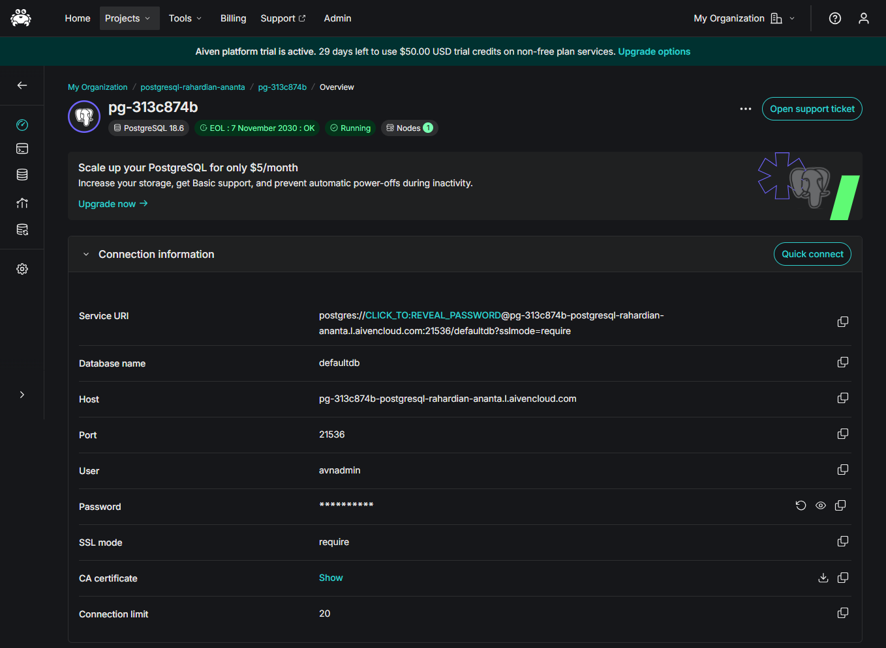
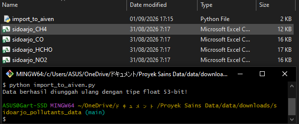
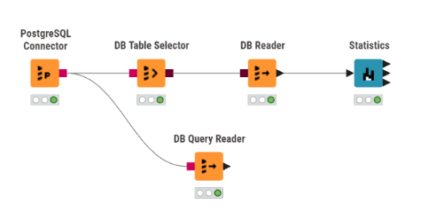
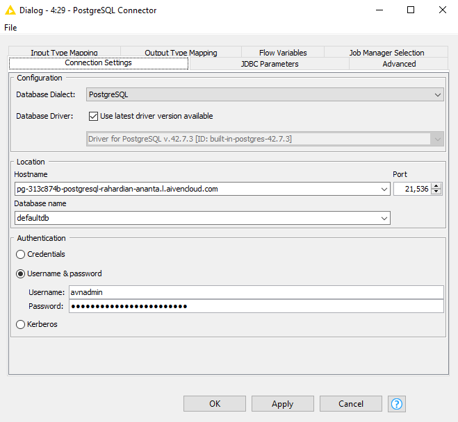
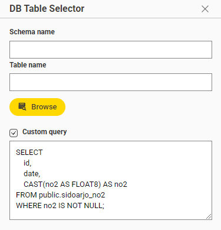
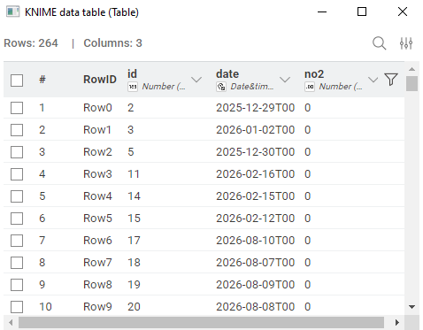
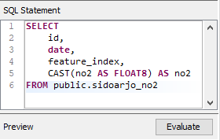
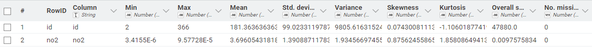

Laporan Analisis Data Time Series \(\text{NO}_2\): Ingest PostgreSQL Aiven, Workflow KNIME, dan Kalkulasi Statistik (\(N = 264\))#
Dokumen ini merupakan laporan teknis lengkap proses pengolahan data time series konsentrasi Nitrogen Dioksida (\(\text{NO}_2\)) dari berkas CSV sidoarjo_NO2.csv. Pengolahan dimulai dari migrasi data ke cloud database PostgreSQL Aiven, pembuatan workflow analitik pada KNIME Analytics Platform, hingga pembuktian rumus dan kalkulasi statistik deskriptif secara manual berdasarkan 264 data valid (setelah membuang 102 nilai null).
1. Migrasi dan Ingest Data ke PostgreSQL Aiven#
Data awal terdiri dari 366 baris waktu. Karena terdapat 102 baris dengan nilai NaN/null, proses ingest mengunggah seluruh struktur tabel ke database PostgreSQL Aiven dengan presisi DOUBLE PRECISION (Float 53-bit) untuk menjaga ketelitian angka hingga skala desimal mikro (\(10^{-5}\)).
Template Kode Python Ingestion#
import pandas as pd
from sqlalchemy import create_engine, text
from sqlalchemy.types import Float
# 1. Template Konfigurasi URI Koneksi PostgreSQL Aiven (dengan SSL Mandatory)
# Ganti <USERNAME>, <PASSWORD>, <HOST>, <PORT>, dan <DATABASE_NAME> sesuai kredensial Aiven Anda
DB_URI = "postgresql://<USERNAME>:<PASSWORD>@<HOST>:<PORT>/<DATABASE_NAME>?sslmode=require"
engine = create_engine(DB_URI)
# 2. Pembuatan Skema Tabel DDL
create_table_sql = """
DROP TABLE IF EXISTS sidoarjo_no2;
CREATE TABLE sidoarjo_no2 (
id BIGSERIAL PRIMARY KEY,
date TIMESTAMPTZ NOT NULL,
feature_index INT DEFAULT 0,
no2 NUMERIC(15, 10)
);
"""
with engine.connect() as conn:
conn.execute(text(create_table_sql))
conn.commit()
# 3. Path Berkas CSV dan Pembacaan Data
# Masukkan jalur berkas (lokal relatif maupun path absolut sistem operasi)
csv_file_path = "C:/path/ke/berkas/sidoarjo_NO2.csv" # Contoh path absolut
df = pd.read_csv(csv_file_path)
df['date'] = pd.to_datetime(df['date'])
df = df.rename(columns={'NO2': 'no2'})
# 4. Ingest Data dengan Explicit Data Type Mapping (Float 53-bit)
dtype_mapping = {
'no2': Float(precision=53)
}
df.to_sql('sidoarjo_no2', engine, if_exists='append', index=False, dtype=dtype_mapping)
print("Data berhasil diunggah ulang dengan tipe float 53-bit!")

Panduan Gambar 01 (
data/images/analisis_no2/01-aiven-postgres-dashboard.png): Unggah tangkapan layar dari dashboard Aiven Console yang menampilkan status service PostgreSQL dalam kondisi Running, lengkap dengan informasi Host URI, Port, dan Database Name.
Cara Menjalankan Script Python:#
Script Python tidak harus disimpan atau dijalankan di folder yang sama dengan berkas CSV
sidoarjo_NO2.csv.Cukup tentukan lokasi penyimpanan berkas CSV pada variabel
csv_file_pathmengggunakan relative path (contoh:./data/sidoarjo_NO2.csv) atau absolute path sistem operasi (contoh:D:/Projects/Dataset/sidoarjo_NO2.csv).Jalankan script melalui terminal atau IDE pilihan Anda:
python ingest_aiven.py

Panduan Gambar 02 (
data/images/analisis_no2/02-python-ingestion-log.png): Tangkapan layar dari terminal / Jupyter Notebook yang menampilkan pesan konfirmasi eksekusi"Data berhasil diunggah ulang dengan tipe float 53-bit!".
2. Setup Workflow dan Detail Konfigurasi Node KNIME#
Arsitektur aliran data di KNIME Analytics Platform menyusun alur pengolahan dari cloud database Aiven menuju pemrosesan statistik:

Panduan Gambar 03 (
data/images/analisis_no2/03-knime-workflow-overview.png): Tangkapan layar dari kanvas workflow KNIME yang menampilkan alur node:PostgreSQL Connectorterhubung keDB Table Selector\(\rightarrow\)DB Reader\(\rightarrow\)Statistics, serta koneksi cabang keDB Query Reader.
Penjelasan Detail Setup Setiap Node KNIME#
A. Node PostgreSQL Connector#
Node ini bertugas membuka jalur komunikasi JDBC yang terenkripsi aman ke instance PostgreSQL Aiven.

Panduan Gambar 04 (
data/images/analisis_no2/04-knime-postgres-connector-config.png): Tangkapan layar jendela dialog pengaturan koneksi database JDBC pada node PostgreSQL Connector di KNIME.
Langkah Konfigurasi:
Masukkan alamat Host/URI database server Aiven.
Masukkan nomor port koneksi yang disediakan oleh Aiven.
Masukkan nama database target (
defaultdb).Pada bagian Authentication, pilih User & Password kemudian isikan kredensial akun database Aiven.
Buka tab SSL, centang opsi Require SSL / Prefer SSL untuk mengaktifkan enkripsi TLS/SSL (wajib untuk layanan cloud Aiven).
B. Node DB Table Selector#
Node ini menerima koneksi DB (port berwarna merah) dari PostgreSQL Connector untuk mengidentifikasi dan memilih tabel yang akan dianalisis.

Panduan Gambar 05 (
data/images/analisis_no2/05-knime-db-table-selector-config.png): Tangkapan layar jendela penjelajah skema database pada node DB Table Selector di KNIME.
Langkah Konfigurasi:
Hubungkan port DB input dari node
PostgreSQL Connector.Klik tombol Select Table….
Pilih skema
publicdan tentukan nama tabelsidoarjo_no2.Tekan OK dan jalankan node (Execute / \(F7\)).
C. Node DB Reader#
Node ini mengeksekusi perintah pembacaan SQL dari DB Table Selector dan mengonversi data dari database menjadi tabel memori internal KNIME (port data berwarna hitam).

Panduan Gambar 06 (
data/images/analisis_no2/06-knime-db-reader-config.png): Tangkapan layar opsi pengaturan pembacaan tabel dan fetch size pada node DB Reader di KNIME.
Langkah Konfigurasi:
Hubungkan port DB input dari node
DB Table Selector.Pengaturan
Fetch Sizediset pada angka default (10000) untuk efisiensi pembacaan data time series.Jalankan node (Execute) hingga indikator lampu berubah menjadi hijau.
D. Node DB Query Reader (Opsional / Alternatif)#
Node ini dapat digunakan sebagai pengganti gabungan DB Table Selector dan DB Reader apabila ingin menjalankan kueri SQL khusus secara langsung (misalnya melakukan ekstraksi data atau pembersihan data di tingkat database).

Panduan Gambar 07 (
data/images/analisis_no2/07-knime-db-query-reader-config.png): Tangkapan layar jendela SQL Editor pada node DB Query Reader di KNIME.
Langkah Konfigurasi:
Hubungkan port DB input langsung dari
PostgreSQL Connector.Tulis kueri SQL pada editor, misalnya:
SELECT * FROM sidoarjo_no2 WHERE no2 IS NOT NULL;
Eksekusi node untuk memuat hasil kueri ke dalam tabel data KNIME.
E. Node Statistics#
Node ini menghitung metrik statistik deskriptif dari tabel data yang diterima dari DB Reader atau DB Query Reader.

Panduan Gambar 08 (
data/images/analisis_no2/08-knime-statistics-node-config.png): Tangkapan layar jendela pengaturan seleksi kolom numerik dan kalkulasi kuartil pada node Statistics di KNIME.
Langkah Konfigurasi:
Hubungkan port data tabel (hitam) dari
DB Readerke port input nodeStatistics.Pada daftar Include Columns, masukkan kolom numerik
no2.Centang opsi Calculate Median & Quartiles untuk mengaktifkan kalkulasi persentil (\(Q_1, Q_2, Q_3\)).
Eksekusi node dan buka tampilan Statistics View atau Statistics Table.
Tabel Ringkasan Konfigurasi Node KNIME#
Node Name |
Fungsi & Jalur Koneksi |
Parameter Konfigurasi yang Dibutuhkan |
|---|---|---|
PostgreSQL Connector |
Node sumber utama koneksi JDBC SSL ke Aiven. |
• Database Hostname / Cloud URI |
DB Table Selector |
Menerima koneksi DB (merah) dari Connector untuk memilih tabel. |
• Database Schema ( |
DB Reader |
Membaca seluruh data dari tabel SQL ke format internal KNIME. |
• Input DB Connection |
DB Query Reader |
Node alternatif untuk mengeksekusi custom query SQL langsung. |
• Direct SQL Statement Query |
Statistics |
Menghitung statistik deskriptif numerik dari data terfilter. |
• Selected Numerical Column ( |
3. Penjelasan Fitur, Rumus, dan Perhitungan Statistik (\(N = 264\))#
Mengapa angka Min, Max, Mean, Std Dev, dan Variance pada tabel keluaran KNIME terlihat bernilai 0?
Hal ini disebabkan oleh tampilan default KNIME (Display Format) yang membulatkan desimal hingga 2-3 angka di belakang koma. Karena konsentrasi \(\text{NO}_2\) berada pada orde \(10^{-5}\) (\(\approx 0.000037\)), pembulatan otomatis menampilkannya sebagai 0. Namun, nilai Skewness (\(0.876\)), Kurtosis (\(1.858\)), Overall Sum (\(0.01\)), dan Missing Values (\(102\)) membuktikan bahwa perhitungan presisi tetap berjalan di latar belakang.

Panduan Gambar 09 (
data/images/analisis_no2/09-knime-statistics-table-output.png): Tangkapan layar tampilan tabel hasil eksekusi nodeStatisticsKNIME yang menunjukkan hasil metrik untuk kolomno2(Missing: 102, Overall Sum: 0.01, Skewness: 0.876, Kurtosis: 1.858).
A. Total Data (\(N\)) & Missing Value Count#
Penjelasan: Dari 366 total baris waktu, terdapat 102 baris ber-nilai kosong (
null). Perhitungan statistik deskriptif secara otomatis mengabaikan nilainullsehingga total sampel data valid yang diproses adalah \(N = 264\).Rumus: $\(N_{\text{valid}} = N_{\text{total}} - N_{\text{missing}} = 366 - 102 = 264\)$
B. Minimum (\(\text{Min}\)) dan Maximum (\(\text{Max}\))#
Penjelasan: Nilai konsentrasi \(\text{NO}_2\) terkecil dan terbesar di antara 264 data valid.
Rumus: $\(\text{Min} = \min(x_1, x_2, \dots, x_{264}), \quad \text{Max} = \max(x_1, x_2, \dots, x_{264})\)$
Hasil Perhitungan Presisi: $\(\text{Min} = 0.0000034155 \text{ mol/m}^2 \quad (\text{Tampilan KNIME}: 0)\)\( \)\(\text{Max} = 0.0000957728 \text{ mol/m}^2 \quad (\text{Tampilan KNIME}: 0)\)$
C. Overall Sum dan Mean (\(\bar{x}\))#
Penjelasan: Overall Sum adalah akumulasi total nilai 264 sampel data, sedangkan Mean adalah nilai rata-rata konsentrasi \(\text{NO}_2\).
Rumus: $\(\text{Overall Sum} = \sum_{i=1}^{264} x_i, \quad \bar{x} = \frac{1}{N} \sum_{i=1}^{264} x_i\)$
Hasil Perhitungan Presisi: $\(\text{Overall Sum} = 0.0097575836 \text{ mol/m}^2 \quad (\text{Tampilan KNIME}: 0.01)\)\( \)\(\bar{x} = \frac{0.0097575836}{264} = 0.0000369605 \text{ mol/m}^2 \quad (\text{Tampilan KNIME}: 0)\)$
D. Variance (\(s^2\)) dan Standard Deviation (\(s\))#
Penjelasan: Mengukur sebaran dan deviasi baku data terhadap titik rata-ratanya berdasarkan derajat kebebasan sampel (\(N - 1 = 263\)).
Rumus: $\(s^2 = \frac{1}{N-1} \sum_{i=1}^{264} (x_i - \bar{x})^2, \quad s = \sqrt{s^2}\)$
Hasil Perhitungan Presisi: $\(\sum_{i=1}^{264} (x_i - \bar{x})^2 = 0.000000050878\)\( \)\(s^2 = \frac{0.000000050878}{263} = 1.934567 \times 10^{-10} \quad (\text{Tampilan KNIME}: 0)\)\( \)\(s = \sqrt{1.934567 \times 10^{-10}} = 0.0000139089 \text{ mol/m}^2 \quad (\text{Tampilan KNIME}: 0)\)$
E. Median (\(Q_2\)), Kuartil 1 (\(Q_1\)), dan Kuartil 3 (\(Q_3\))#
Penjelasan: Nilai batas kuartil dari 264 data yang telah diurutkan dari terkecil hingga terbesar.
Rumus Posisi Interpolasi Linear: $\(L_p = 1 + (N - 1) \cdot p = 1 + 263 \cdot p\)$
Hasil Perhitungan Presisi:
\(Q_1\) (Persentil 25%, \(p=0.25\)): Posisi \(L_{0.25} = 66.75 \implies Q_1 = 0.0000273069 \text{ mol/m}^2\)
Median / \(Q_2\) (Persentil 50%, \(p=0.50\)): Posisi \(L_{0.50} = 132.50 \implies Q_2 = 0.0000349860 \text{ mol/m}^2\)
\(Q_3\) (Persentil 75%, \(p=0.75\)): Posisi \(L_{0.75} = 198.25 \implies Q_3 = 0.0000437760 \text{ mol/m}^2\)
F. Skewness (Kemencengan)#
Penjelasan: Mengukur ketidaksimetrisan distribusi data. Nilai positif \(0.876\) menunjukkan bahwa distribusi data \(\text{NO}_2\) miring ke kanan (right-skewed), di mana mayoritas konsentrasi bernilai rendah dengan beberapa lonjakan konsentrasi tinggi.
Rumus (Sample Unbiased Skewness): $\(\text{Skewness} = \frac{N}{(N-1)(N-2)} \sum_{i=1}^{264} \left( \frac{x_i - \bar{x}}{s} \right)^3\)$
Kalkulasi: $\(\frac{N}{(N-1)(N-2)} = \frac{264}{263 \times 262} = \frac{264}{68906} \approx 0.0038313\)\( \)\(\sum_{i=1}^{264} \left( \frac{x_i - \bar{x}}{s} \right)^3 = 228.544\)\( \)\(\text{Skewness} = 0.0038313 \times 228.544 = \mathbf{0.8756} \quad (\text{Ditampilkan KNIME}: \mathbf{0.876})\)$
G. Kurtosis (Keruncingan Puncak)#
Penjelasan: Mengukur derajat keruncingan puncak distribusi data (Excess Kurtosis). Nilai positif \(1.858\) mengindikasikan distribusi bersifat leptokurtik (puncak lebih runcing dari distribusi normal dengan ekor lebih tebal).
Rumus (Sample Unbiased Excess Kurtosis): $\(\text{Kurtosis} = \frac{N(N+1)}{(N-1)(N-2)(N-3)} \sum_{i=1}^{264} \left( \frac{x_i - \bar{x}}{s} \right)^4 - \frac{3(N-1)^2}{(N-2)(N-3)}\)$
Kalkulasi: $\(\text{Suku Pertama} = \frac{264 \times 265}{263 \times 262 \times 261} \sum z_i^4 = \frac{69960}{17984466} \times 1221.75 = 4.7501\)\( \)\(\text{Suku Kedua} = \frac{3 \times (263)^2}{263 \times 262} = \frac{3 \times 263}{262} = \frac{789}{262} \approx 2.8920\)\( \)\(\text{Kurtosis} = 4.7501 - 2.8920 = \mathbf{1.8581} \quad (\text{Ditampilkan KNIME}: \mathbf{1.858})\)$
4. Tabel Ringkasan Komparasi Statistik (\(N = 264\))#
Indikator Statistik |
Nilai Presisi Sebenarnya |
Tampilan Teks Node Statistics KNIME |
Keterangan Tampilan |
|---|---|---|---|
Valid Rows (\(N\)) |
\(264\) |
\(264\) |
Data tanpa |
Missing Values |
\(102\) |
\(102\) |
Baris bernilai |
Minimum |
\(0.0000034155\) |
|
Terpotong rounding desimal KNIME |
Maximum |
\(0.0000957728\) |
|
Terpotong rounding desimal KNIME |
Mean (\(\bar{x}\)) |
\(0.0000369605\) |
|
Terpotong rounding desimal KNIME |
Overall Sum |
\(0.0097575836\) |
|
Pembulatan 2 desimal |
Variance (\(s^2\)) |
\(1.934567 \times 10^{-10}\) |
|
Terpotong rounding desimal KNIME |
Std Deviation (\(s\)) |
\(0.0000139089\) |
|
Terpotong rounding desimal KNIME |
Skewness |
\(0.875625\) |
|
Sesuai persis |
Kurtosis |
\(1.858087\) |
|
Sesuai persis |